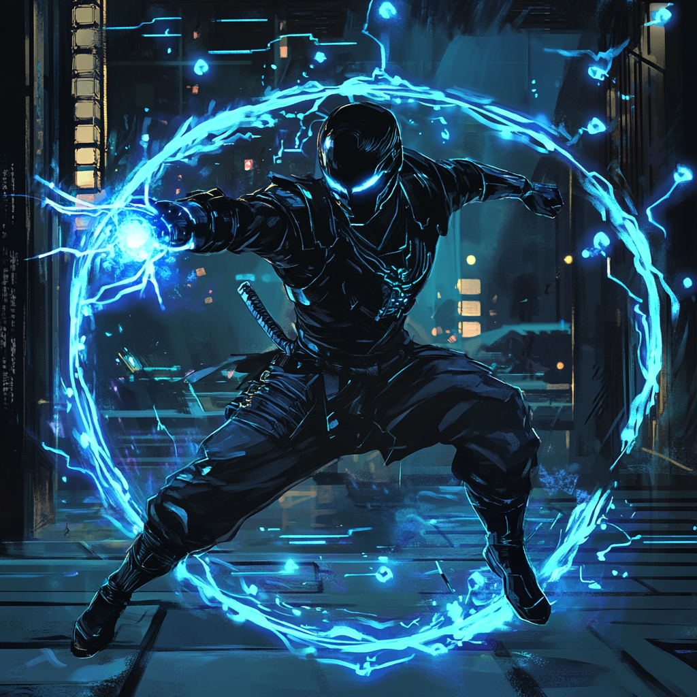
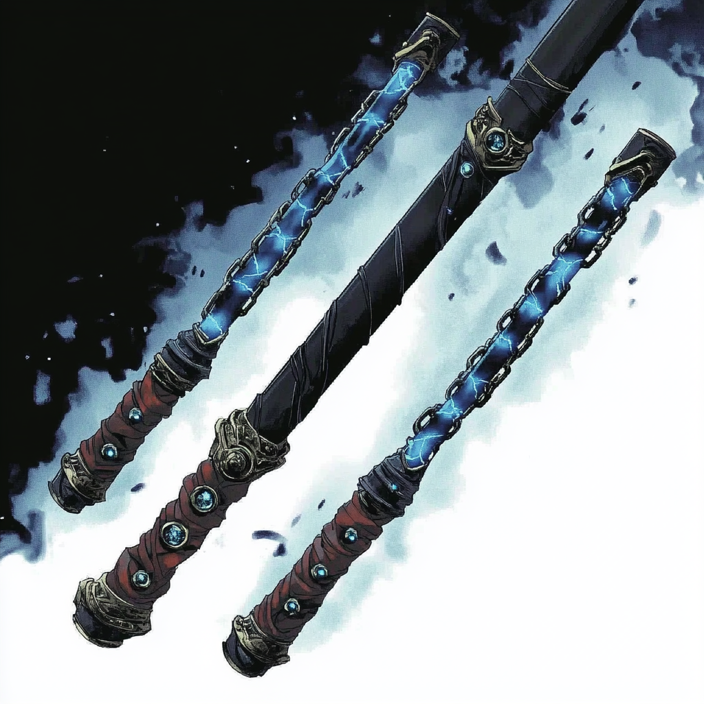

Voidstep: Steps Between Worlds

The Temple's Edge Todo Aoi grew up in a remote temple outside Kyoto, training in martial arts under his grandfather, a master of an ancient fighting style combining meditation and movement. The temple sat at a nexus point of mystical energies, though Todo remained unaware of its significance through his childhood.
His natural aptitude for martial arts manifested in two distinct ways—an ability to read and counter opponents' movements, and moments where he seemed to move through space in impossible ways during sparring matches.
The Sorcerer's Eye Doctor Strange first sensed Todo's potential during an astral survey of mystical nexus points. He observed the young martial artist unconsciously tapping into dimensional energies during his training, combining them with his fighting techniques.
The Ancient One's scrolls spoke of warrior-mages who could step between dimensions in combat, but the technique had been lost for centuries. Todo's natural ability to merge martial arts with dimensional manipulation marked him as a potential heir to this legacy.
The Awakening Strange arranged to visit the temple, arriving just as Todo experienced his first conscious teleport during an intensive training session. Pushed to his limits, Todo instinctively merged his defensive stance with a dimensional step, vanishing from an incoming strike and reappearing behind his sparring partner.
The temple's mystic energies surged in response, awakening Todo's latent magical abilities. His martial arts forms began to incorporate short-range teleports, allowing him to flow through space as naturally as through physical stances.
The Path Between Under Strange's guidance, Todo learned to control this fusion of magic and martial arts. His defensive techniques evolved to include dimensional displacement, and his attacks integrated teleportation to strike from unexpected angles.
His signature "Void Step" maneuver emerged from combining his blink ability with classic counter-attacks. By predicting an opponent's movement and teleporting at the right moment, he could turn their own momentum against them through reverse-momentum throws.
The Academy's Halls Sponsored by Strange, Todo joined the Boston Avengers Academy (BAA), which offered both mystical and superhero training. Under the Academy’s controlled environment, he refined his dimensional powers without risking larger spatial instabilities.
Todo's studies focused on combining his powers in novel ways—executing chain strikes through multiple teleports, stabilizing defensive stances with spatial manipulation, and employing rapid blink offensives that overwhelmed sparring partners.
Present Day Todo rigorously maintains his training schedule at BAA, rising early to practice martial forms. His quarters hold a small meditation area furnished with mystical texts from Strange.
Acting as a bridge between conventional combat instructors and mystical mentors, Todo helps others see how different powers can mesh harmoniously. His capacity to swap positions with allies during a fight makes him a prime training partner for new recruits learning team dynamics.
Many Academy students spot him in the meditation garden, moving gracefully while space seems to ripple around him. Beneath his calm exterior lies a fierce dedication to perfecting the interplay between martial arts and dimensional magic.
Todo’s presence exemplifies the rebirth of an ancient, mystical martial tradition—merging physical discipline with arcane portals. Although still mastering his abilities, he stands as a testament to the potential for unifying corporeal and magical combat tactics in ways previously thought lost.
The Voidbound Triskelion — "Three segments, one path through the void"

Ancient scrolls from Todo's temple reference a weapon forged at dimensional crossroads—a sanjiegun divided between realities by mystic smiths. Dr. Strange, sensing the artifact’s connection to Todo’s teleportation, recovered its scattered fragments. Each segment houses echoes of various dimensions, letting Todo channel his teleportation gifts through the weapon’s arcane lineage.
The increased (+2) damage of the Voidbound Triskelion stems from its ability to strike simultaneously through multiple planes of existence. In actual combat, blue energy ripples trace its path, marking the weapon’s passage through overlapping realities.